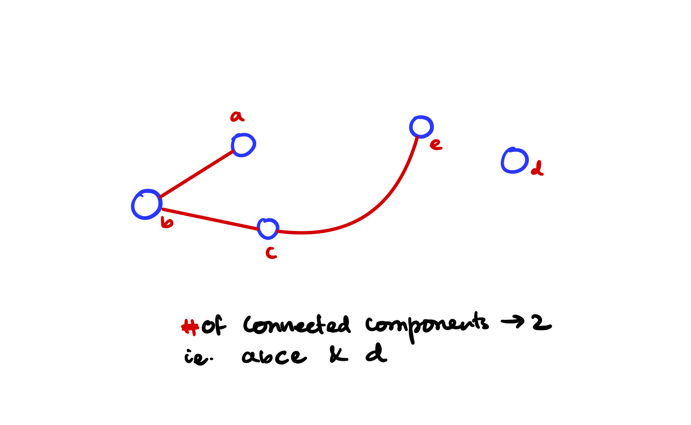

Breath first and depth-first search
BFS and DFS are two of the most common graph as well as tree traversal techniques that ever existed. You should always understand the basic understanding behind these traversals.
Things to remember about
- BFS uses a queue and FIFO ordering is something that it uses.
- DFS uses recursion, and recursively goes in-depth until the element is found.
Standard Graph implementation
We'll use our standard implementation for graphs and will write BFS and DFS to work on that standard graph.
The following graph implementation may not be the very best implementation that you'll find, but it is good enough and most importantly you'll be able to implement this in an interview setting.
#include <iostream>
#include <list>
#include <unordered_map>
#include <vector>
#include <utility>
using namespace std;
// Directed graph implementation
class Graph{
private:
unordered_map<char, list<pair<char, int>>> adj_list;
public:
void add_edge(char vertex1, char vertex2, int weight){
adj_list[vertex1].push_front(make_pair(
vertex2, weight
));
E.push_back({vertex1, vertex2});
}
void register_vertex(vector<char> vertices){
for (auto v:vertices){
list<pair<char, int>> l;
adj_list.insert({v, l});
}
}
unordered_map<char, list<pair<char, int>>> view(){
return adj_list;
}
};
Now on top of this custom graph [adjacency list] representation, we'll implement BFS and DFS the 2 most common algorithms in graphs and trees ever.
BFS with standard graph
Implementation follows the CLRS textbook for reference although is not a blind copy.
#include <iostream>
#include <list>
#include <unordered_map>
#include <vector>
#include <utility>
#include <queue>
vector<char> BFS(Graph &g, char startFromVertex){
// create a queue
queue<char> q;
// result order for the bfs
vector<char> bfstree;
// the graph as a map
unordered_map<char, list<pair<char, int>>> graphView = g.view();
// visited map
unordered_map<char, bool> visited;
for (auto vertex:graphView)
visited[vertex.first] = false;
q.push(startFromVertex); // startFromVertex must be in graph g
while(!q.empty()){
char vert = q.front();
if (visited[vert] == false){
// if we did not visit this vertex please process
bfstree.push_back(vert);
auto neighbors = graphView[vert];
for (auto neighbor:neighbors){
q.push(neighbor.first);
}
visited[vert] = true;
}
// now remove the vertex
q.pop();
}
return bfstree;
}
DFS on standard Graph
Implementation of DFS is recursive, it recursively goes into the graph then backtracks once there is nowhere to go. But in this implementation, I'll strictly avoid recursion because the graph is a little hard to grasp, and doing recursion on a graph may seem \(\text{BLACK MAGIC}\). Instead, I'll implement DFS using a stack data structure to mimic recursion. It's an iterative implementation that is much easier to grasp.
vector<char> DFS(Graph &g, char startFromVertex){
vector<char> stack;
unordered_map<char, bool> visited;
vector<char> dfsOrder;
auto graphView = g.view();
// initialize all the visited == false
for (auto vertex:graphView)
visited[vertex.first] = false;
// push whatever with you are starting with
stack.push_back(startFromVertex);
while(!stack.empty()){
char tos = stack.back();
stack.pop_back();
if (visited[tos] == false){
// if this top of the stack is not visited then mark it
// visited and push into the answer array [dfsOrder].
visited[tos] = true;
dfsOrder.push_back(tos);
}
for (auto adj_list:graphView[tos]){ // look at the adj_list of tos vertex
if (visited[adj_list.first] == false){
stack.push_back(adj_list.first);
}
}
}
return dfsOrder;
}
Application of depth first search
Find all the connected components of a graph
Approach
- Using depth first search we can go in depth of a graph and for each connected components the DFS program will stop.
- We do this until we visit all the nodes in a graph. This way we'll find all the connected components of the graph.
C++ Code
#include <algorithm>
#include <iostream>
#include <vector>
#include <unordered_map>
#include <forward_list>
using namespace std;
class Graph {
private:
unordered_map<char, forward_list<char>> adj_list;
public:
Graph(vector<char> vertices){
for (char vert:vertices){
forward_list<char> neighbor;
adj_list.insert({
vert, neighbor
});
}
}
unordered_map<char, forward_list<char>> view(){
return adj_list;
}
void add_edge(char from, char to){
adj_list[from].push_front(to);
adj_list[to].push_front(from);
}
};
vector<char> DFSOrder(Graph &g, char startingVertex){
unordered_map<char, bool> visited;
vector<char> stack;
vector<char> order;
auto view = g.view();
// mark all node to visited == false
for(auto y:view)
visited[y.first] = false;
stack.push_back(startingVertex);
while (!stack.empty()){
char tos = stack.back();
stack.pop_back();
if (visited[tos] == false){
visited[tos] = true;
order.push_back(tos);
}
for (auto nbr:view[tos]){
if (visited[nbr] == false){
stack.push_back(nbr);
}
}
}
return order;
}
void connected_components(Graph &g){
unordered_map<char, bool> visited;
auto view = g.view();
// mark all node to visited == false
// doesn't matter what is the value for each (key, value) pair in map;
// we'll be deleting upon seeing a key that is visited.
// we could have made a vector then the delete would become O(n);
for(auto y:view)
visited[y.first] = false;
// while( visited == all not true)
// use dfs;
int connected_component_number = 0;
while(!visited.empty()){
// take any random vertex that is not yet visited
char startingVertex = visited.begin()->first;
vector<char> dfs = DFSOrder(g, startingVertex);
cout << "Connected Component Number: " << connected_component_number << " -> ";
// now remove all the visited in this call of dfs
for (char this_component_vertex:dfs){
cout << this_component_vertex << " ";
visited.erase(this_component_vertex);
}
connected_component_number++;
cout << endl;
}
}
// DRIVER CODE
int main(){
int number_of_vertices;
vector<char> v;
cin >> number_of_vertices;
while (number_of_vertices){
char vertex;
cin >> vertex;
v.push_back(vertex);
number_of_vertices--;
}
Graph g = Graph(v);
int number_of_edges;
cin >> number_of_edges;
while(number_of_edges){
char from, to;
cin >> from >> to;
g.add_edge(from, to);
number_of_edges--;
}
auto view = g.view();
for (auto vert:view){
cout << vert.first << " -> ";
for (auto nbr:vert.second)
cout << nbr << " ";
cout << endl;
}
vector<char> dfs = DFSOrder(g, 'a');
cout << "DFS ORDER Starting From 'a' -> ";
for (auto i:dfs)
cout << i << " ";
cout << endl;
connected_components(g);
}
Let's run the above program on a random graph

Input Pattern
5 <- Number of vertices
a
b
c <- all the vertices of the graph
d
e
3 <- number of edges
a b <- Edges in between vertices, undirected edges
b c
c e